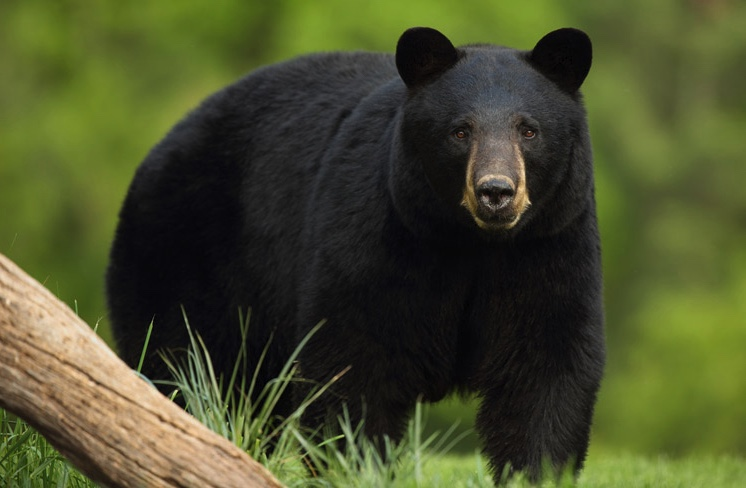
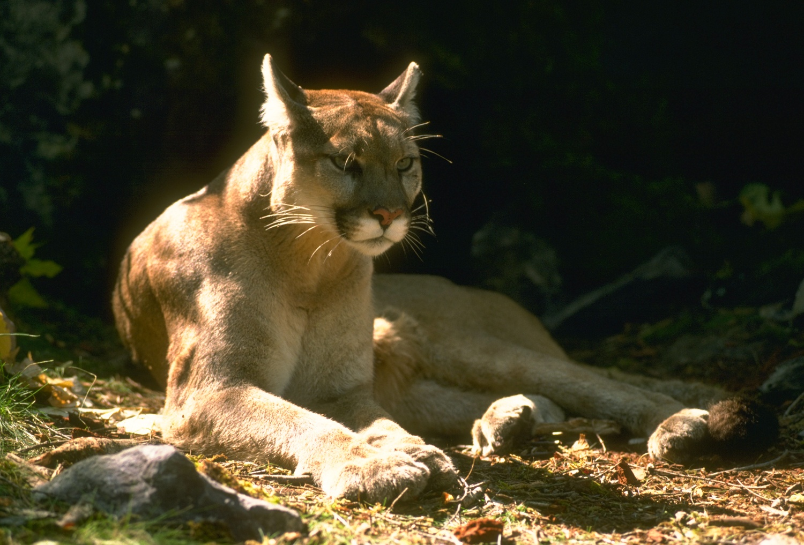
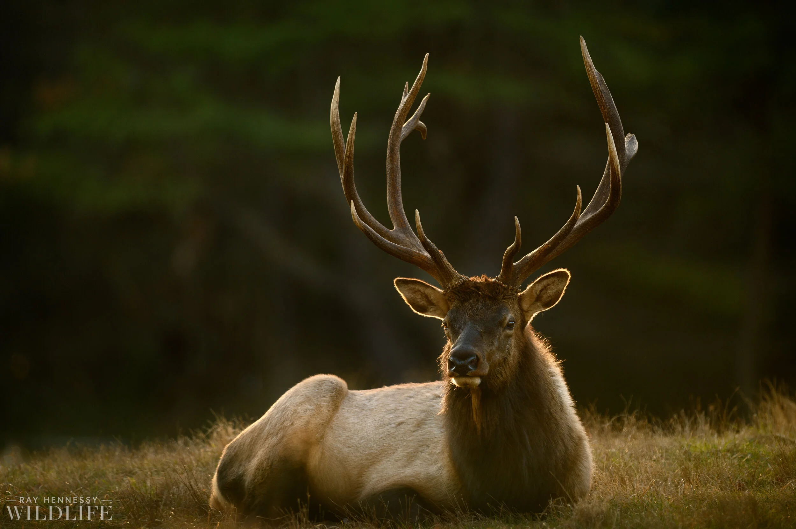
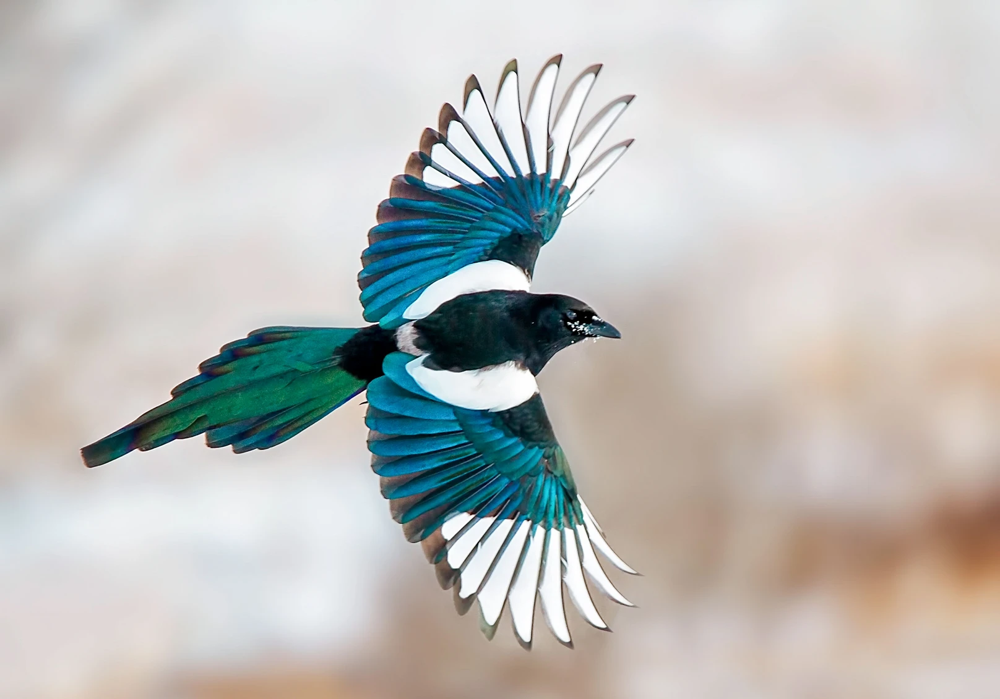
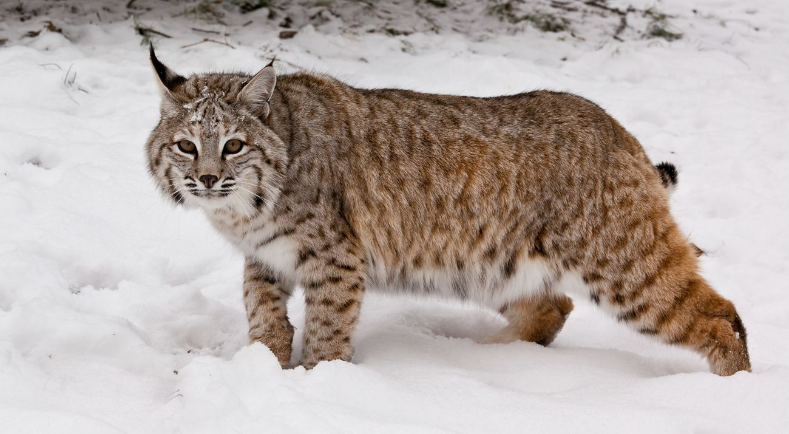

Black Bear(Ursus americanus)

Despite the name, the Black Bears fur can be brown, cinnamon, blond, blue-gray, or eve white, in addittion with black.
The bears are medium-sized bears native to the North Americas and are the smallest and most common bear species in the continent.
Bears can run up to 35 to 50 miles per hpur in short bursts despite their bilky appearance.
Golden Eagle(Aquila chrysaetos)

The Golden Eagle is the larges and fastest raptors in North America, and the entire Northern Hemisphere.
The Females are larger than the males, the wingspans can measure between 7 and 7.5 feet, wider than the hieght of most humans.
Mountain Lion(Puma concoulor)

The Mountain Lion is a wild cat native to the Americas.
Other names that are given to the kitty are: pumas, cougars, panthers, and catamounts.
For the large size of the cat, they are classified as a small cat because they purr and meow like a small housecat!
Elk(Cercus canadensis)

Elk are one of the largest species of deer in the world, the male bulls weigh up to 700 to 1,00 pounds and the female cows average around 500 pounds.
The antlers can grow up to an inch per day during peak development and can weigh up to 40 pounds.
The bulls antlers then drop their antlers every winter and regrow them in the spring before the mating season.
Magpie(corvidae)

These birds are highly intelligent, adaptable black and white birds that belongt to the crow family.
Magpies can pass the mirror self-recognition test, showing high levels of self-awareness and problem-solving skills.
When a fellow magpie dies, groups of birds will sometimes gather around the body in a loud, solemn circle, seemingly mourning their loss. Most magpies choose a single partner and stay with them year-round in the same territory until one partner dies.
Bobcat(lynx rufus)

The bobcat is a medium-sized wild cat native to North America, known for its signature short bobbed tail.
It thrives in desserts, forests, swamps, scrublands, and even near urban areas. It can run up to 30 miles per hour and leap as far as 12 feet to catch prey.
It weighs between 12 and 30 pounds, are carnivours and eats prey mainly rabbits and hares though they can take down larger prey like deer.